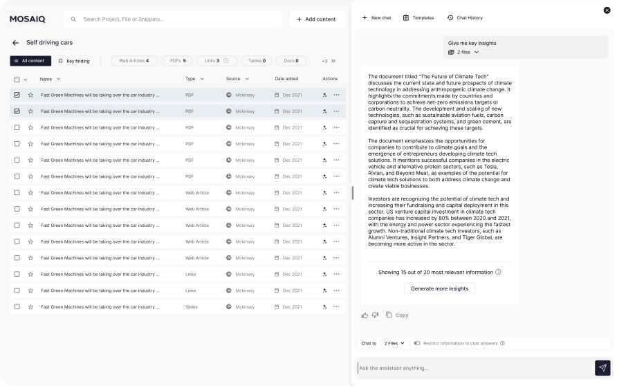

MosaiQ Labs
Integrating AI into workflows
MosaiQ Labs
Junior UX/UI Designer
2023 - 2025
At MosaiQ Labs, I worked as a UX/UI designer on a complex AI-driven research platform, focusing on how artificial intelligence can be integrated into everyday workflows in ways that feel transparent, trustworthy, and genuinely supportive. My work spanned interaction design, system thinking, and visual consistency—shaping how users collaborate with AI, structure their research, and understand system behaviour. Across these projects, I focused on reducing cognitive load, clarifying AI intent, and designing patterns that help users feel confident and in control while working with advanced technology.

The User & Their Goal
Our target audience was primarely finance consultants —highly skilled at understanding market dynamics and driven by making confident, high-impact investment decisions for their company and clients.

The Problem
From data collected through questionnaires and direct observations, we were able to notice a pattern of repetitive, mechanical tasks that people undertaken when working on a deliverable: collecting documents, organising information, and synthesising large volumes of data. Although necessary, this work was time-consuming and distracting, pulling the focus away from the strategic decision-making where peoples' expertise mattered most.
CASE STUDY
On these premises, we needed to solve the following issues:
-
Create an environment in which users can collect all the documents in one place, in one click (if possible).
-
Create an environment in which it is easy to select one or multiple files.
-
Have the possibility to add more content to the project at any time.

Project Page UI showing a rich and various files database related to the subject of Self Driving Cars. For practicality, in this instance, all the articles have the same titles. In a real workflow, the article's title would remain the same as the original one.
In this environment, multiple files type can be collected and ordered via the tabs at the top of the database, or filtered through the filters at the top of the page.
"Oooops!" it can happen that an article, especially webpages, are protected and can't be downloaded. We've integrated a descreet but effective visual cue to let users know the status of the file.

To strenghten the visual feedback when files are selected, we adopted the same approach as Gmail: once the file is selected, the background colour changes, and the box next to the file's title get "ticked".

Users can always add more content to their project through the "Add content" CTA at the top of the page.

Or they can add pages via the MosaIQ extension. User can either select the current page, selected tabs, or all the opened tabs.
Once we tackled the issue of collecting documents, we focused on the need to synthesise large volumes of data, hence the interactions with the AI Assistant. And a whole new set of questions came up:
How does the user know which files is the assistant analysing?
How can users check the context from which the answer has been extracted from?
Can users highlight a segment of the answer and ask further questions about the spefici text?
The Opportunity
This gave us the opportunity to understand our target users' flow and design a web application with integrated AI, designed for knowledge workers who need to produce in-depth deliverables from complex and data-heavy workflows


The Intervention
many of Cesare’s routine research tasks became automated. With AI handling the heavy lifting of information analysis, the time he spent on repetitive actions dropped dramatically, allowing him to focus his attention on critical judgement, strategy, and interpretation.
The Impact
Cesare began producing deliverables up to ten times faster, with greater clarity and confidence, while improving the overall quality of his work.
The Outcome
Cesare created a bespoke workflow within MosaiQ—one that balanced automation with human insight. In the first trimester after adoption, his investment success rate increased by 25%, as he was able to dedicate his time to the decisions that truly required human expertise.